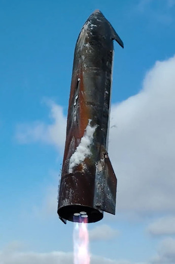

SpaceX Starship Flight 15

Join Star Fleet for the first-ever flight attempt of a fully-reusable orbital rocket, the "holy grail" of rocketry, and the first ever landing attempt of both the Starship upper stage and the V3 version of the Super Heavy booster! We're running a separate trip at a discount to view the landing, from an close-up spot.
For ship landing, we plan to be in the mouth of the Brownsville ship channel, with is both nearly as close as possible to the pad while having an ideal view of the Starship on approach as it makes a wide 270 degree turn with our location essentially at the pivot point.
LATEST LANDING UPDATE: As of Friday November 14 at 11 am CST, SpaceX remains GO for catch today around 3:20 PM CST, and vehicle and weather are both looking good! As such, we've opened up another boat, the Osprey, which we had a great time on yesterday, so go ahead and book your spots now. Looking forward to seeing you all there!
We have a Whats App community that we highly recommend you join, with channels for announcements, insider launch updates, discussion, questions and more! We also use it for early tickets, special community events and more! You can also follow our Twitter, Instagram and Facebook for announcements and updates. Thanks!

Starship Flight 15 Ship Landing Viewing
Price: $69 per passenger
Dates: Saturday November 14 at 3:15 PM CST
Key Times: Checkin 1:15 PM | Boarding 1:45 PM | Departure 2:15 PM
Boarding Location: Double Sunshine & Diver 1 The Original Dolphin Watch, 33256 State Park Rd 100, South Padre Island, TX 78597
Osprey: Osprey Cruises, 501 E Maxan St, Port Isabel, TX 78578
- Ideal location to view the key events of the landing
- Have a clear view from the center of Starship's 270 deg turn on approach
- Around ≈4 miles / ≈6.5 km from landing pad
- Spectacular views of flip maneuver, landing burn, catch and pad
- Stable vessel, calm seas and open deck for excellent viewing
- Free parking, a guaranteed viewing spot and no need to show up many hours early
- If landing attempt aborted prior to checkin time, receive a full refund
DELAY/SCRUB POLICY: Tickets are generally non-refundable.
Per agreement with our captains, if there is a launch delay, your tickets will still be valid for the new corresponding landing date and time. Should you not be able to make the new date, you can either transfer your tickets to someone who can, or reach out to use by email at FleetCommand@Star-Fleet.Tours or phone at 941-879-4240 to request a refund (at least 24 hours in advance of launch). If the launch is successful but landing at Starbase is aborted, and the abort is annouced prior to the checkin time for landing, you will be fully refunded. Should a Starbase landing abort be officially announced after that or if a passenger does not show up by the published boarding time, the boat will go out as scheduled to see the rocket on the pad, and tickets will be considered used and will no longer be refundable. Conversely, in case there is an unexpected issue with the boat or weather keeping us from departing for the launch, and it occurs as scheduled, we'll issue you a full refund.